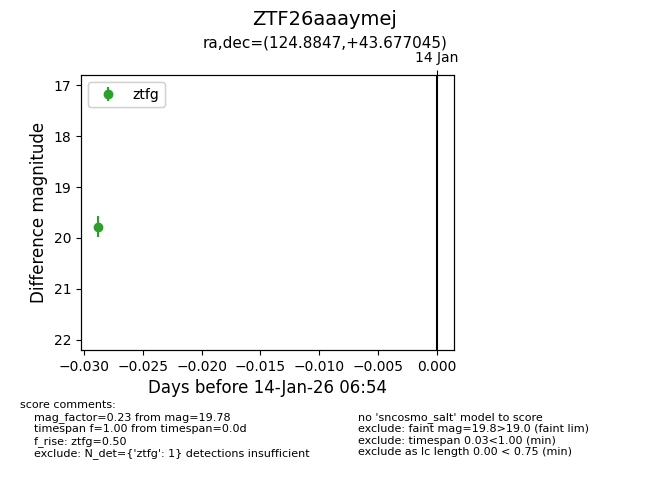
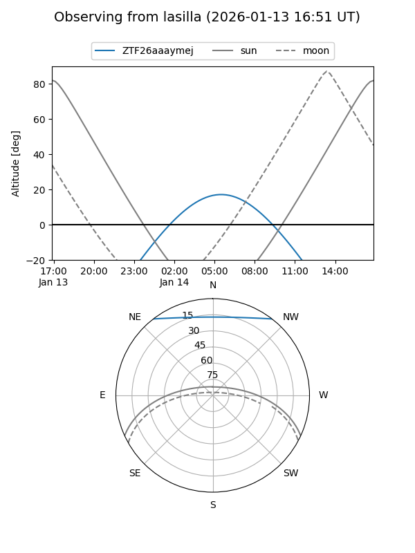
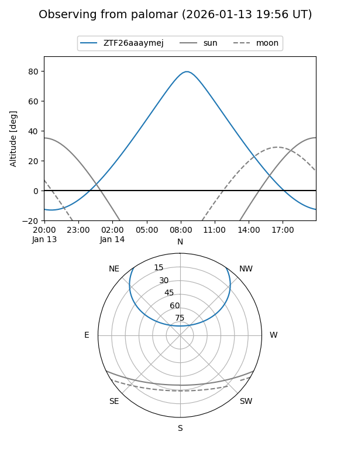

ZTF26aaaymej
Target ZTF26aaaymej at 2026-01-14 06:57
Aliases and brokers:
FINK: link
Lasair: link
ALeRCE: link
alt names
ZTF26aaaymej (ztf,fink_ztf)
Coordinates:
equatorial (ra, dec) = 124.8847,+43.67704
equatorial (HMS+DMS) = 08:19:32.32,+43:40:37.36
galactic (l, b) = (176.7185,+33.79944)
Flags:
Photometry:
last ztfg=19.78
1 ztfg detections
Lightcurve

Visibility


Additional plots